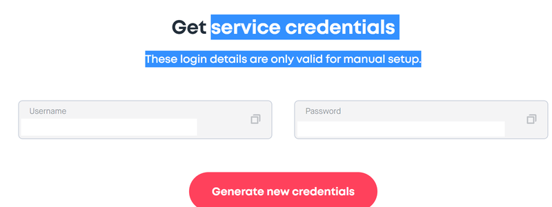
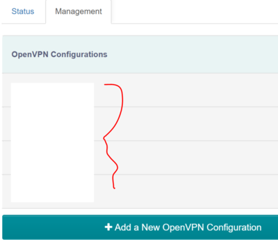

Setting up OpenVPN on your router 07th Feb 2020
In this blog I will explain you how to set up OpenVPN on the router in your home or small office
What we will achieve at the end of this blogAt the end of this tutorial, we will see how to configure OpenVPN on your rotuer and therefore, how all devices connected to that local network can use the VPN
You would have come across many articles which say how important it is to use VPN from security and Anonymity perspective.So,I won't dwell into that.Rather,I would just concentrate on the steps required to setup VPN on your router.
For any average consumer, VPNs- Virtual Private Networks can be an excellent security aid,specially if you are running a small business. VPNs provide security to data in transit as they encrypt the data. The main question is how to achieve the privacy and security all the time at your home or office.
One way is to install separate VPN clients on all your devices as well as all those being used by your family or small business co-workers.But installing a separate client on a multitude of different devices is a pain and tiresome job.Also ensuring everyone connecting through VPN is also tough task. Other way is to configure your VPN on the router so that all the devices connected to it automatically will use VPN. With a VPN client on your router, anyone using your local network to browse the web or access a cloud service will automatically be using the VPN as it'll be running 24x7.This is the way we are discussing here.
-
Below are the steps one should follow
- Buy a router that supports OpenVPN
- Power on the router. Pretty basic but should not be missed 😊
- Your ISP-Internet Service Provider might have provided you with a Wi-Fi-modem. My ISP's network had SSID of say BELONG-XXXX. This was the network I used to connect to so far to connect to internet(without VPN). This Wi-Fi modem shall have an Ethernet LAN port that can be used to connect to the router’s (the one you bought) WAN port. You can connect your ISP's modem to router by cable directly
-
Now its time to connect your device(Windows,Android,iOS etc) to
the router. You can connect to the router via Ethernet cable or
Wi-Fi.I connected through Wi-Fi
-
To connect your device to the router,you can search for the
SSID of the router.Enter UserName and Password as
well(SSID,Username,Password must be available in router's
documentation). My router's SSID started with
GL-XXXXX-XXX.To access the Web Admin panel of the
router I had to visit http://192.168.8.1 Once logged in,
you can view the router's Web Admin panel. Once connected, you
can login to the web-based interface of the router.Once you
succesfully log in, you will see the dashboard.I have added mine
for reference only.Yours may look different obviously.

Note: Look for the URL, Userid and the Password in the router’s documentation itself
- Now you should be able to connect your devices to the local area network (LAN) of the router. You cannot access the Internet currently
- Web Admin panel allows you to check the status and manage the settings of the router.Once in the admin panel, configure your router to access the internet so that it can talk to the outside world. To do so,I clicked on the “repeater” settings of the router. It takes an existing signal from a wireless router or wireless access poin and rebroadcasts it to create a second network. In Repeater section, click Scan to search for the available wireless networks nearby (in my case the original wireless network with SSID BELONG-XXX).Connect using user ISP’s username and password
- Doing above would ensure that your router is communicating with outside world and you connect to the Internet even if you are connecting to the SSID of the router
So far we have configured router to connect to existing Wi-Fi network.We havenot setup VPN yet. Now lets look how to setup vpn.All major VPN providers like ExpressVPN ,Cyberghost,Surfshark etc allow you to download manual configuration Download the .ovpn file from the manual configuration page of your VPN provider. Each Server location (in my case as I was trying to connect to India-Mumbai) had an .ovpn file download option. Download the file to your Deskptop and save it. Note: I have used both ExpressVPN and Surfshark and the process is more or less same.Am sure it is similar with other VPN providers as well.I in this case will use Surfshark just because I have that currently but that doesn’t stop you from using your favorite VPN provider.
-
Steps to follow on VPN provider's website
- Buy a subscription. Most of them offer a trial period of 30 days or so which is excellent option to try out
- I am taking an eg of SurfShark.Navigate to surfshark’s website https://support.surfshark.com/hc/en-us/categories/360001458953-Tutorial This link is available at the time of download.Basically you need to search how to setup manual configuration irrespective of which provider you are using
- Since am using Windows laptop i follow the steps to download .opvn file for windows device.I downloaded both .tcpovpn and .udpovpn files UDP and TCP are protocols with their own pros and cons.I wont get into depth of it but I would say The OpenVPN UDP protocol is usually a little bit faster, while OpenVPN TCP is usually a little bit more stable.However, that is not always the case, therefore, we always suggest trying them both out and checking what works best for you.
- Once you have downloaded this .opvn file, you will also have to copy paste service credential from surfsharks website as shown in img 4 below.Save these somewhere as you will need it soon 
-
Now go back to the routers admin panel for final steps
-
Look for OpenVpn Client. My router’s webadmin had below
settings as shown in img 2

- Click on the OpenVPN client and you will see a page which asks you to add .ovpn file something like in img 3 
- Drop the .ovpn file you saved on your machine(the file you saved on desktop in our earlier steps).It will ask for name(eg mumbai_myvpnserver1) just for you to identify the server location quickly. It will also ask for server's username and password).Copy paste the username and password your got from your vpn providers website(in this case surfshark)
- Click connect and you are all set to go.Happy surfing using VPN